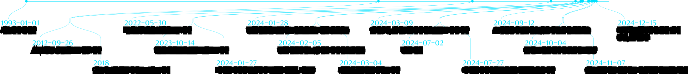

우은빈의 이야기
우은빈은 서울에서 태어났다. 아버지의 직업은 은행원이었다. 그래서 초등학생 때 지점을 옮김에 따라 대구 초등학교도 다녔다. 그의 가족은 부모님과 친오빠로 구성되어 있다. 우은빈은 10년간 승무원으로 근무하며 많은 경험을 쌓았고, 이 경험을 바탕으로 승무원 면접 꿀팁을 유튜브에서 공유했다. 머리를 다친 이후에는 머리뼈가 찌그러진 모습을 다 공개하며 현재는 브이로그 콘텐츠를 제작하는 유튜브 크리에이터로 활동 중이다.

그는 글쓰기를 통해 자신의 경험을 기록하는 것을 자랑스럽게 여긴다. 환자일 때도 명칭 실어증으로 매일 단어를 기억하지 못해서(괄호)를 치면서 어떻게든 글을 썼다. 언어장애, 실어증을 극복하기 위해 책 읽기를 즐기는데 특히 쉽게 읽히는 도서를 선호한다.
[The Life Gallery: 우은빈전]을 통해 우리는 한 사람의 용기 있는 발걸음을 만납니다. 그녀가 앞으로도 자신만의 이야기를 당당히 써내려갈 수 있기를, 그리고 그 여정에 더 많은 이들의 응원과 지지가 함께하기를 바랍니다.